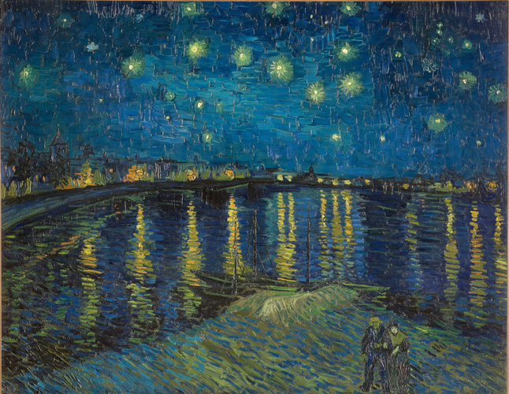

罗纳河上的星夜 Starry Night over the Rhône
梵高 · 1888年9月 · 巴黎奥赛博物馆
Vincent van Gogh · September 1888 · Musée d'Orsay, Paris
图片：Wikimedia Commons，公有领域 / Image: Wikimedia Commons, public domain

发现 · Discover
三种蓝 Three blues
画夜晚，他不用黑色，而是用了普鲁士蓝、群青和钴蓝。
To paint the night, he used not black but Prussian blue, ultramarine and cobalt.
水中的灯光 Lights on the water
城里的煤气灯是强烈的橙色，倒映在罗纳河的水面上。
The city's gaslights glow an intense orange, reflected in the Rhône.
星星 The stars
星星像宝石一样闪烁。
The stars sparkle like gemstones.
河边的恋人 The lovers
画面下方有一对散步的恋人，让这片星夜显得安静而温柔。
A couple strolls at the bottom of the painting, making this starry night calm and tender.
念念不忘 A long wish
早在1888年4月，他就写信说："我需要一个星夜。"
As early as April 1888, he wrote: "I need a starry night."
在夜里画 Painted at night
他告诉提奥，终于画出了星空，而且真的是在夜里、在煤气灯下画的。
He told Theo he had painted the starry sky at last, actually at night, under a gas lamp.
故事 · The story
ACT I 第一幕 · 念念不忘 A long wish
1888年2月来到阿尔勒后，梵高一直想画夜晚。4月，他写信说需要一个星夜；6月，他又说这幅画一直萦绕在心头。
After arriving in Arles in February 1888, Van Gogh kept thinking about painting the night. In April he wrote that he needed a starry night; in June, that the painting kept haunting him.
1888年9月 · 巴黎奥赛博物馆 / September 1888 · Musée d'Orsay, Paris
ACT II 第二幕 · 终于画出星空 At last, the starry sky
他先在《夜晚露天咖啡座》里画了一角夜空。九月底，他来到罗纳河边，画下了整片星空。
He first painted a corner of night sky in Café Terrace at Night. At the end of September, by the Rhône, he painted the whole starry sky.
ACT III 第三幕 · 另一个星夜 Another Starry Night
几个月后，他住进圣雷米的疗养院，又画了一幅《星夜》，现藏纽约现代艺术博物馆。那一幅翻涌不安，这一幅却安静温柔。
A few months later, in the asylum at Saint-Rémy, he painted another Starry Night, now at MoMA in New York. That one is turbulent; this one is calm.
1889 · 纽约现代艺术博物馆 / 1889 · MoMA, New York
他终于画出了星空。 At last, he painted the starry sky.
作品档案 · Artwork record
| 画家（生卒年） · Artist (dates) | 文森特·梵高（1853–1890） / Vincent van Gogh (1853–1890) |
|---|---|
| 画名 · Title | 罗纳河上的星夜 / Starry Night over the Rhône (La Nuit étoilée) |
| 年份 · Date | 1888年9月，阿尔勒 / September 1888, Arles |
| 材质 · Medium | 布面油画 / Oil on canvas |
| 尺寸 · Dimensions | 72.5 × 92 cm |
| 收藏地 · Collection | 巴黎奥赛博物馆 / Musée d'Orsay, Paris |
关于画家 · About the artist
文森特·梵高（1853–1890），荷兰画家。他将近27岁才开始画画，短短十年留下了大量作品。1888年他来到法国南部的阿尔勒，在那里画出了许多最著名的画。
Vincent van Gogh (1853–1890) was a Dutch painter. He began painting at around 27 and left a huge body of work in just ten years. In 1888 he moved to Arles in the south of France, where he painted many of his best-known works.
更多梵高的画 · More by Vincent van Gogh